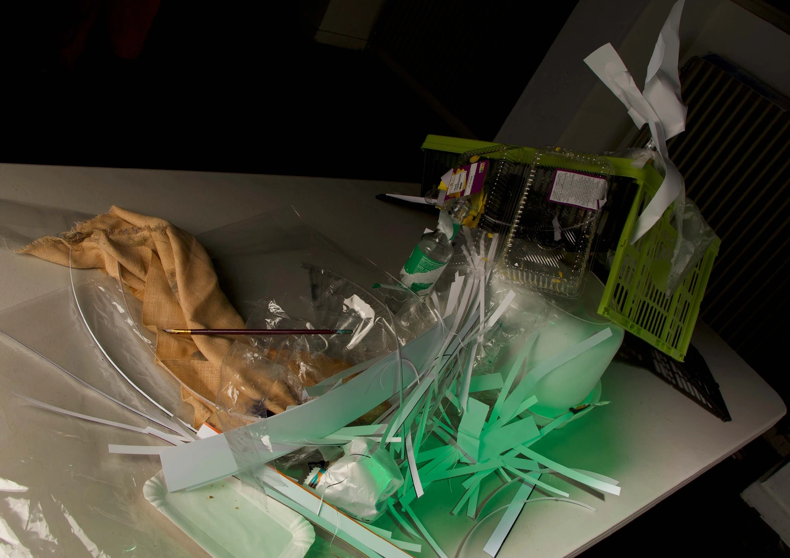
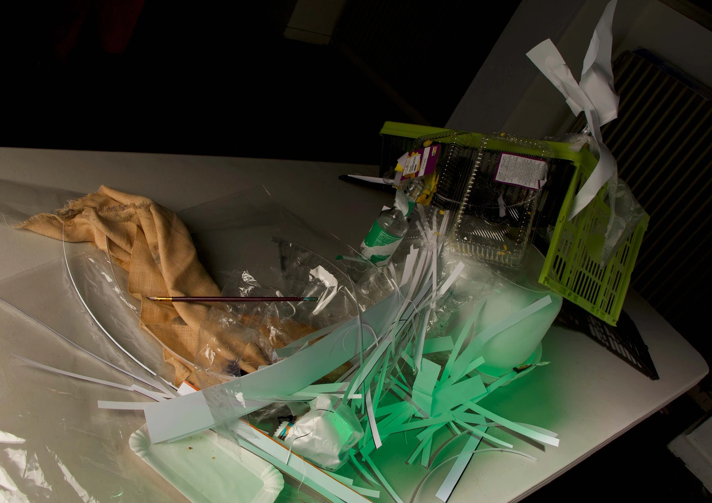
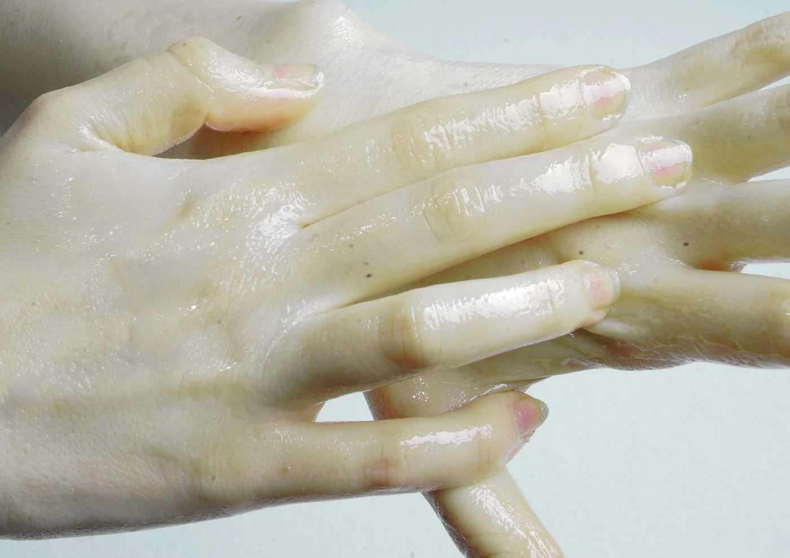
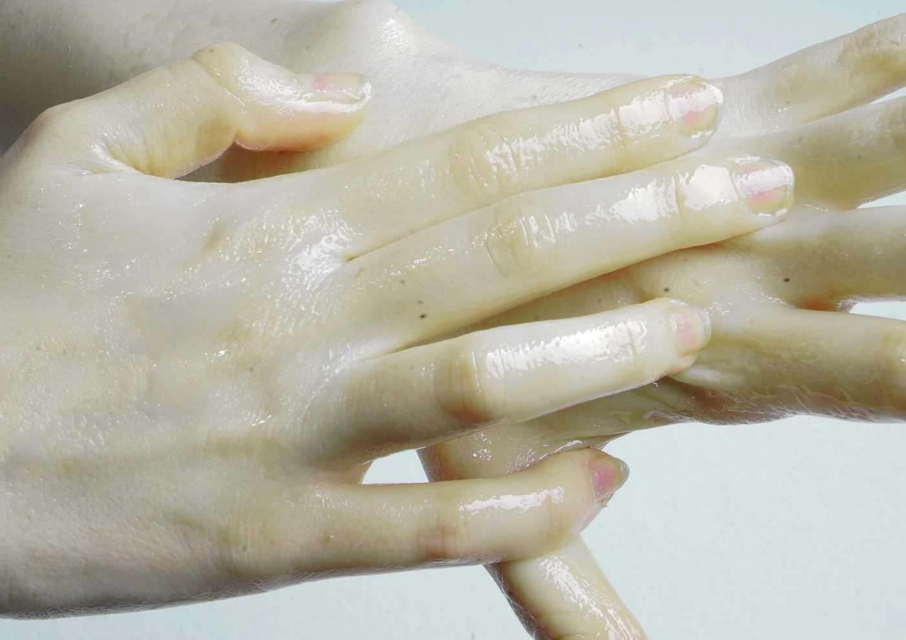

olvehyh
« Su Studio Photography »
A series of experimental photographs shot and edited for studio photography course.
Studio Photography
Color Grading · Set Design
Den Haag, 2024
Camera: Canon E0S
Color Grading · Set Design
Den Haag, 2024
Camera: Canon E0S


 



 
